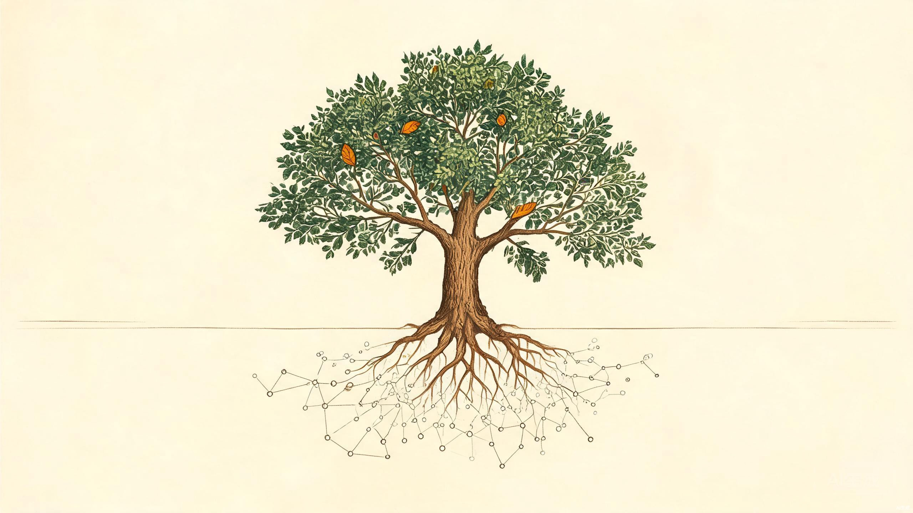

Soil · Network
土壤 / 网络
底层知识图谱为根系，吸收官方源、判例与时序数据，为推演提供养分。
为关键人生决策构建稳健的替代方案与风险对冲机制。
全球首款基于知识图谱与时序推演的个人决策操作系统（Life OS）。在跨境移民、资产配置、重症医疗、职业转型等高风险抉择中，洞察走向、构建 Plan B、对冲风险。

四要素构成 LifeTree 的视觉与逻辑骨架：根系吸收知识，主干推演方向，枯枝显形风险，侧芽生长替代路径。
底层知识图谱为根系，吸收官方源、判例与时序数据，为推演提供养分。
主干为当前状态，分支为决策方向，侧芽（虚线圈）为 What-if 推演。
虚线与赭石标记风险节点，高危路径以枯枝深赭显形，不掩盖失效可能。
替代路径以虚线并行生长，对冲主路径风险，让决策始终保有退路。
单一品牌主色深森林绿，承载信任与生长；暖羊皮纸为底，树皮褐为骨；状态色仅用于真实语义。
衬线展示字立品牌气质，无衬线正文承载界面，等宽字标注数据与置信度。
大标题、品牌名、章节标题。立沉静可信之气。
正文、界面文案、说明。高可读，中性克制。
数据标签、置信度、时序戳。精密可对齐。
用线型而非色彩堆叠表达确定性：实线为官方高置信，虚线为社区与模型推断，枯枝以赭石虚线显形。
官方源 · 可溯源 · 最高置信
社区验证 · 交叉印证
模型预测 · 需人工复核
主干向上生长为决策，根系向下延展为数据节点网络。一株树，即一套决策系统。
低于此尺寸仅用单色简化版。
安全区内不得有其他元素。
面对高风险决策，语气即承诺。四条原则约束每一次表达。
置信度即态度，不掩盖未知，不把推断包装成事实。
每条推演链接到权威源与判例，结论可追查、可复核。
不贩卖焦虑，不承诺确定，呈现利弊与概率，让用户自主判断。
精密之外保留温度，理解决策背后是真实的人生。
进入决策树核心界面，以德国高技能人才移民推演为实例，体验主干、分支、侧芽与 Plan B 的完整生长。